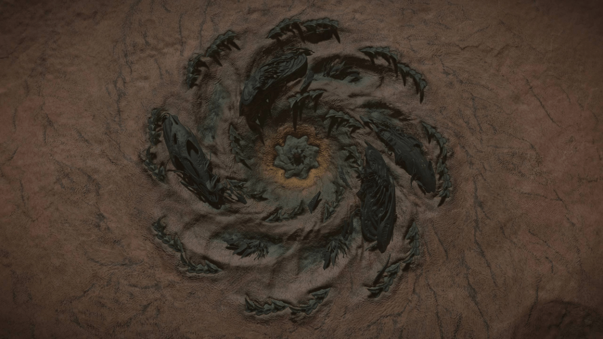
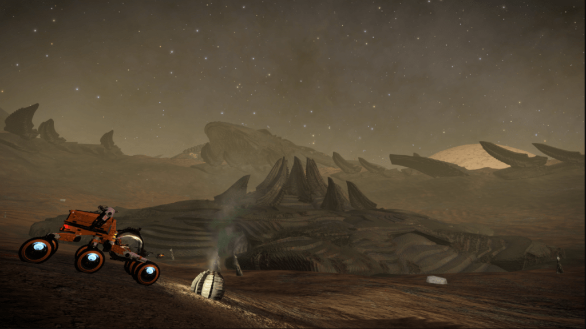

Discovered late June 3303 these sites stretch a substantial distance across the surface and can clearly be seen from low orbit, they are linked to the return of the Thargoids. Thargoid ships have been seen appearing in certain areas of these sites. The sites were previously known as Unknown Structures, but subsequently renamed as explicitly Thargoid.
Video on the Thargoid Structure by Obsidian ant
A Thargoid Structure is a sprawling structure found on a planet’s surface. The first site was discovered on June 26, 3303 on planet B 1 C of the HIP 19026 system; by July 5, it was believed that all extant sites, 208 in total, had been discovered (though one extra was later revealed by Eagle Eye). The function and purpose of these sites are currently unknown.
These sites first found from Listening posts in the Maia system, appear organic in nature which many at this stage speculate to Thargoid related (later confirmed). From orbit, the site appears to have a spiral-like structure which can instantly be linked to a similar shape as Thargoid ships seen across the Pleiades sector.
Thargoid Surface Sites consist of a central, organic-like structure in a crater or depression at the centre of a spiral geologic formation with more organic formations protruding from the spiral’s eight arms. The central structure is a smaller spiral with shorter arms, reminiscent of a Thargoid Interceptor’ general shape. A possible eight-panelled door that is oriented flat with the surface can be seen at the centre of the structure.

An Image of the Thargoid Structure from above which clearly shows the spiral effect (Credit to Elite WIKIA for this clear image)
Several access Tunnels lead below the surface and seemingly deeper into the site itself. These doors are initially closed and can only be opened by carrying a Thargoid Sensor or Thargoid Probe in the cargo hold of your SRV. Vehicles that approach or enter the central structure will experience some light electromagnetic interference that disrupts their HUD. There are both “active” and ‘inactive’ sites. ‘Inactive’ sites have collapsed areas meaning you’re unable to access the tunnels and the Thargoid Device. As new sites are discovered, some also appear to be more developed or complete than others, with a greater proportion of their structure visible above ground.
Scattered around the site are “Thargoid Uplink Devices”, these can be scanned and will give you a marker in the navigation so you can return to the site more easily. Scanning these also produces one of three kinds of data material: Unknown Material Composition Data, Thargoid Residue Data Analysis, and Unknown Structural Data. In addition, the organic structures across the site can be destroyed to obtain materials ranging from Sulphur and Iron to Meta-Alloys.
‘Active’ sites are also home to the Thargoid Link and the Thargoid Device. Messages from the Thargoid Device were used to find other Thargoid Structures, though subsequently it was found via the Eagle Eye initiative that the device messages point to locations of Thargoid activity and so have been changing over time, resulting in the original messages to be no longer be available. Activate the device by dropping a Probe, Sensor and Link in the appropriate locations – there are three bays and they each display a hologram of the required item when you enter them. Once the device is active scan the Thargoid Device with your Data Link Scanner to get the messages.
The Device can also be activated with some bays containing Guardian Relics (all three bays must be filled, but they can all be Relics). This will cause the machine to overload and (from August 3308) return a new item – the Unclassified Relic – which can be of interest to several engineers.
If you need to reset the device (e.g. you tried to activate it with a set of items that did nothing) then simply re-scan the device with empty bays and it should return to showing the expected items over each bay.

Image of the Unknown Structure, Credit to Darwin for this Image
So far upon writing this there have been 208 sites found in total, this an impressive amount to have found most of which were found via the Thargoid Link which allows you to locate up to 3 sites from every device activated from the Unknown messages the Device outputs.
Here are 10 of the sites:
| Site | System | Planet | Cords | Active (Y/N) |
| US001 | HIP 19026 | B 1 C | -17.9575 // -152.6994 | N |
| US002 | ARIES DARK REGION DB-X D1-63 | A 7 A | 25.5553 // 78.1765 | N |
| US003 | PLEIADES SECTOR OS-U C2-7 | 4 A | 58.4244 // -177.0446 | N |
| US004 | COL 285 SECTOR CV-Y D57 | AB 4 A | 4.7654 // 136.2398 | N |
| US005 | HIP 14909 | 2 A | -26.4561 // -27.4742 | Y |
| US006 | MEL 22 SECTOR ZU-P C5-1 | 4 A | -63.5266 // 8.0136 | Y |
| US007 | MEL 22 SECTOR NX-U D2-27 | 5 A | -39.7932 // -56.2540 | Y |
| US008 | MEL 22 SECTOR NX-U D2-31 | 3 A | -51.7229 // -110.0287 | Y |
| US009 | MEL 22 SECTOR YU-F B11-1 | AB 5 A | -52.0061 // -5.6793 | Y |
| US010 | MEL 22 SECTOR UT-R C4-4 | 1 A | 16.2444 // 25.5284 | Y |
More can be found at this extensive spreadsheet as well as other useful information.
Note: This sheet is from 2017, as such it is considered out of date, is missing a few sites and the site coordinates are only valid for 3.8 / Legacy. A new updated sheet is currently being worked on.
Credit goes to the Elite WIKIA for some content on this page, as well as Canonn’s Thread-naught 10